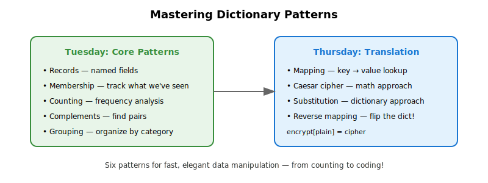
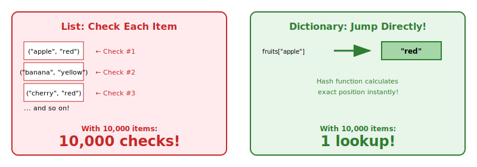
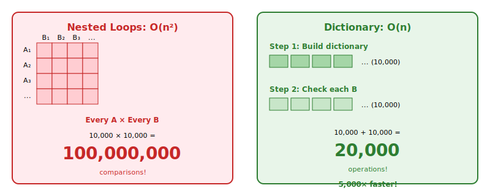
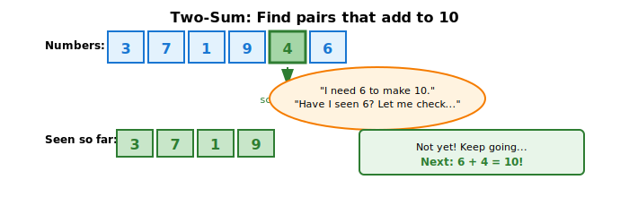
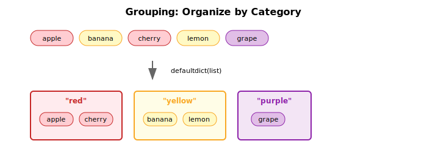
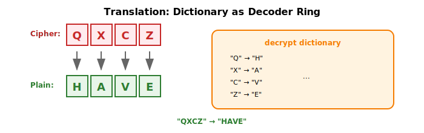
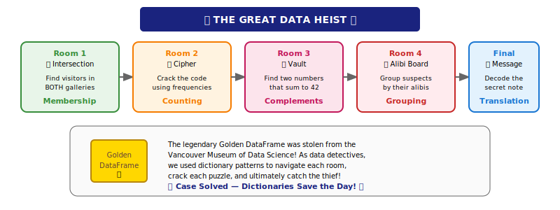

Week 6: Dictionaries
This week we unlocked Python’s secret weapon: the dictionary! We discovered that dictionaries aren’t just for storing data — they’re a Swiss Army knife for solving problems that would otherwise require tedious nested loops. Fast lookups, automatic grouping, instant counting — dictionaries do it all!
Your Growing Toolkit
Every problem we solve uses some combination of these tools:
- Representation — how we encode meaning (binary, types, RGB)
- Collections — how we group things (lists, tuples, dicts)
- Control flow — how we make decisions and repeat (if/else, loops)
- Functions — how we name and reuse logic
- Abstraction — how we hide complexity
- Efficiency — how we measure cost (summations, timing analysis)
This week: Dictionaries + Patterns → Powerful, efficient data manipulation!
The Big Picture

We started by discovering why dictionaries are lightning fast — constant-time lookup no matter how big they get! Then we mastered six patterns that pop up everywhere in real-world programming: records, membership, counting, complements, grouping, and translation.
Tuesday: Dictionary Fundamentals
We discovered that dictionaries give you instant lookup by key — whether you have 100 entries or 100,000!
Why Dictionaries Rock
With a list of tuples, finding an item means checking each one… painfully:
# List approach: check each item one by one 😩
fruits = [("apple", "red"), ("banana", "yellow"), ("cherry", "red")]
for fruit, color in fruits:
if fruit == "apple":
print(color)
breakWith a dictionary? Jump straight to the answer!
# Dictionary approach: instant lookup! 🎯
fruits = {"apple": "red", "banana": "yellow", "cherry": "red"}
print(fruits["apple"]) # BAM! Instant!
This speed difference becomes MASSIVE with thousands or millions of entries!
Watch Out: KeyError!
What happens if you look up a key that doesn’t exist?
suspect = {"name": "Prof. Histogram", "department": "Statistics"}
try:
print(suspect["hobby"]) # BOOM! 💥
except KeyError as e:
print(f"KeyError: {e} — that key doesn't exist!")Two solutions:
- Check first:
if "hobby" in suspect: - Use
defaultdict: It provides a default value for missing keys — no more crashes!
Pattern 0: Records
Dictionaries work beautifully as named records — keys act as field names:
# A list of records — each dict holds one entry
security_log = [
{"person": "Prof. Histogram", "room": "Gallery A", "time": "7:00pm"},
{"person": "Dr. Correlation", "room": "Gallery B", "time": "7:15pm"},
{"person": "Prof. Histogram", "room": "Gallery B", "time": "7:30pm"},
]
# Access by name, not position — so much clearer!
for log in security_log:
print(f"{log['person']} entered {log['room']} at {log['time']}")This is exactly how our Billboard data was structured!
Pattern 1: Membership
Use case: Track whether we’ve seen something before — lightning fast!
The Slow Way: Nested Loops
Finding people who visited both Gallery A and Gallery B:
# Check EVERY person in A against EVERY person in B 😱
in_both = []
for person_a in gallery_a_visitors: # Loop through A
for person_b in gallery_b_visitors: # Loop through B
if person_a == person_b:
in_both.append(person_a)With 10,000 people in each list: 100,000,000 comparisons! That’s a recipe for a coffee break.
The Fast Way: Dictionary Lookup

from collections import defaultdict
# Step 1: Build a "seen" dictionary — one pass through A
in_gallery_a = defaultdict(bool)
for person in gallery_a_visitors:
in_gallery_a[person] = True
# Step 2: Check Gallery B against our dictionary — one pass through B
in_both = []
for person in gallery_b_visitors:
if in_gallery_a[person]: # Instant lookup! No KeyError with defaultdict!
in_both.append(person)With 10,000 in each: just 20,000 operations! That’s 5,000x faster!
defaultdict(bool) returns False for missing keys, avoiding KeyError.
Pattern 2: Counting
Use case: Count how many times each item appears — let Python do the work!
from collections import Counter
word = "mississippi"
counts = Counter(word)
print(counts) # Counter({'i': 4, 's': 4, 'p': 2, 'm': 1})
print(counts.most_common(2)) # [('i', 4), ('s', 4)]
Counter is a specialized dictionary that handles counting automatically. Perfect for frequency analysis — like counting letter occurrences to crack a cipher!
Pattern 3: Complements
Use case: Find two numbers that add up to a target!
from collections import defaultdict
numbers = [3, 7, 1, 9, 4, 6, 2]
target = 10
seen = defaultdict(bool)
for n in numbers:
complement = target - n
if seen[complement]:
print(f"Found pair: {complement} + {n} = {target}")
seen[n] = True
As we scan through, we remember what we’ve seen — and instantly check if the complement exists. This is the famous “two-sum” pattern!
Pattern 4: Grouping
Use case: Organize items into categories — like pandas groupby, but from scratch!
from collections import defaultdict
fruits = [
("apple", "red"),
("banana", "yellow"),
("cherry", "red"),
("lemon", "yellow"),
]
by_color = defaultdict(list)
for fruit, color in fruits:
by_color[color].append(fruit)
print(dict(by_color))
# {'red': ['apple', 'cherry'], 'yellow': ['banana', 'lemon']}
defaultdict(list) automatically creates an empty list for missing keys — no more checking before appending!
Grouping Records
When your items are dictionaries, same pattern — just grab the key you want to group by:
suspects = [
{"name": "Prof. Histogram", "alibi": "faculty meeting"},
{"name": "Mr. Regression", "alibi": "faculty meeting"},
{"name": "Ms. Outlier", "alibi": "working late"},
]
by_alibi = defaultdict(list)
for suspect in suspects:
by_alibi[suspect["alibi"]].append(suspect["name"])
# {'faculty meeting': ['Prof. Histogram', 'Mr. Regression'], 'working late': ['Ms. Outlier']}Thursday: Translation Pattern
We added one more powerful pattern: using dictionaries as lookup tables to translate between representations!
Pattern 5: Translation
Use case: Convert values from one representation to another — instantly!
from collections import defaultdict
word_to_emoji = defaultdict(str, {
"sun": "☀️", "rain": "🌧️", "cloud": "☁️",
"happy": "😊", "sad": "😢", "love": "❤️",
"cat": "🐱", "dog": "🐶", "coffee": "☕"
})
words = ["I", "love", "coffee"]
result = []
for w in words:
emoji = word_to_emoji[w.lower()]
result.append(emoji if emoji else w)
print(" ".join(result)) # I ❤️ ☕The dictionary is the translation table — no formulas, just instant lookup!
Caesar vs. Random Substitution
For a simple Caesar cipher (shift by a fixed amount), we can use math:
def decode_caesar(text, shift):
result = ""
for char in text:
if char.isalpha():
position = ord(char) - ord('A')
new_position = (position - shift) % 26
result += chr(new_position + ord('A'))
else:
result += char
return result
print(decode_caesar("WKLV LV WKH FRGH", 3)) # "THIS IS THE CODE"But what about a random substitution cipher? No formula can help — we need a mapping dictionary!
# The decryption key: cipher letter → plain letter
decrypt = {
"X": "A", "W": "B", "E": "C", "R": "D", "Z": "E",
"Y": "F", "M": "G", "Q": "H", "P": "I", "J": "J",
"K": "K", "S": "L", "D": "M", "F": "N", "G": "O",
"H": "P", "B": "Q", "L": "R", "V": "S", "T": "T",
"U": "U", "C": "V", "N": "W", "A": "X", "O": "Y", "I": "Z"
}
secret_message = "QXCZ X MLZXT LZXRPFM WLZXK"
decoded = ""
for char in secret_message:
if char.isalpha():
decoded += decrypt[char]
else:
decoded += char
print(decoded) # "HAVE A GREAT READING BREAK"
Building the Reverse Mapping
If you have a decrypt dictionary (cipher → plain), you can build an encrypt dictionary (plain → cipher) by flipping it:
# Given: decrypt maps cipher → plain
# Build: encrypt maps plain → cipher
encrypt = {}
for cipher_letter, plain_letter in decrypt.items():
encrypt[plain_letter] = cipher_letter
# Now we can encode our own messages!
message = "HELLO"
encoded = ""
for char in message:
if char.isalpha():
encoded += encrypt[char]
else:
encoded += charTwo-way translation tables — dictionaries make it effortless!
The Six Dictionary Patterns
| Pattern | Use Case | Technique |
|---|---|---|
| Record | Store named fields | {"name": ..., "age": ...} |
| Membership | Track what we’ve seen | defaultdict(bool), seen[x] = True |
| Counting | Count occurrences | Counter(items) |
| Complement | Find matching pairs | Store & check complements |
| Grouping | Organize by category | defaultdict(list) |
| Translation | Convert representations | Direct key → value mapping |

Putting It All Together: The Great Data Heist

Throughout this week, we told the story of The Great Data Heist — a mystery at the Vancouver Museum of Data Science where the legendary Golden DataFrame was stolen!
As data detectives, we used dictionary patterns to:
- Room 1 (Membership): Find suspects who visited BOTH Gallery A and Gallery B by building a “seen” dictionary
- Room 2 (Counting): Crack a cipher by analyzing letter frequencies with
Counter - Room 3 (Complements): Open the vault by finding two numbers that sum to the target
- Room 4 (Grouping): Find the lone wolf suspect by grouping alibis with
defaultdict(list) - Final Challenge (Translation): Decode the thief’s message using a substitution cipher mapping
Each room taught us a pattern that solves real problems efficiently. The escape room was fun, but the patterns are tools you’ll use again and again!
Quick Reference
Creating Dictionaries
| Task | Code |
|---|---|
| Empty dictionary | d = {} |
| With initial values | d = {"a": 1, "b": 2} |
| Default for missing keys | d = defaultdict(bool) |
| Default empty list | d = defaultdict(list) |
| Counter | c = Counter(items) |
Dictionary Operations
| Task | Code |
|---|---|
| Get value | d[key] or d.get(key, default) |
| Set value | d[key] = value |
| Check if key exists | if key in d: |
| Get all keys | d.keys() |
| Get all values | d.values() |
| Get key-value pairs | d.items() |
Looping Over Dictionaries
# Loop over keys
for key in d:
print(key)
# Loop over values
for value in d.values():
print(value)
# Loop over both
for key, value in d.items():
print(f"{key}: {value}")defaultdict Types
| Default Factory | Missing Key Returns | Use Case |
|---|---|---|
defaultdict(bool) |
False |
Membership tracking |
defaultdict(int) |
0 |
Counting |
defaultdict(list) |
[] |
Grouping |
defaultdict(str) |
"" |
Translation |
What’s Next?
Reading Week — No Classes!
Enjoy the break! When we return in Week 8, we’ll keep building on these foundations as you work toward Project 1.
Have a great reading break!